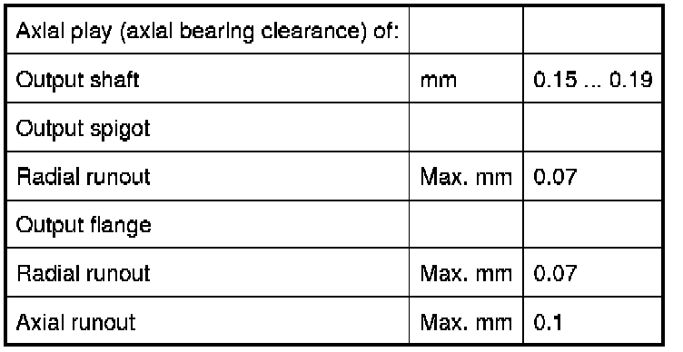

Operation CHARM
: Car repair manuals for everyone.
Home
>>
BMW
>>
2007
>>
X3 3.0si (E83) L6-3.0L (N52K)
>>
Repair and Diagnosis
>>
Transmission and Drivetrain
>>
Manual Transmission/Transaxle
>>
Specifications
>>
Mechanical Specifications
>>
Technical Data
>>
Transmission Shafts GS6-37BZ/DZ
Transmission Shafts GS6-37BZ/DZ
23 21 Transmission Shafts GS6-37BZ/DZ
